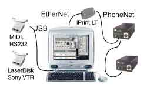
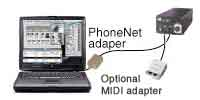
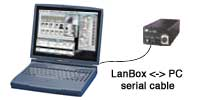
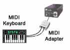

LanBox-LC manual v2.0b1
Getting started with the LanBox-LC
| |
LanBox-LC manual v2.0b1 Getting started with the LanBox-LC |
|
|
| Index
Introduction Getting started What's under the hood Using MIDI or Serial |
Hardware setup using a Macintosh with Ethernet.
The picture illustrates an example of a lighting control setup with the iMac for semi-permanent shows and interactive applications. Connect through the RJ11 (telephone) network connectors of a LanBox up to 8 LanBoxes using the Farallon iPrint-LT adapter to the Ethernet of a Mac. Hardware setup using a Macintosh with built-in Localtalk/Printer Port Hardware Ingredients... * Any Mac with System 7.6 or later, Apple With an older Powerbook (or Macintosh), a LanBox and a MIDI adapter you have a small, but powerful setup. For space saving and portable shows, this is a very nice solution. With this setup you can work with up to 250 DMX-512 channels (about 15 to 20 fixtures) per LanBox-LC. Triggers from the Mac (for example using the bundled LCedit software) and/or from MIDI through an optional MIDI interface. Set it up in no time, run the show and get out fast, without any hassle. |
| Hardware setup using a PC or Mac with a serial port.
Hardware Ingredients... * Any 64 MB Pentium PC with Windows 98 or Using a PC notebook's serial port, a LanBox and our LanBox <-> PC serial cable you have a cheap, but less advanced setup. (and only for the "Plus" software package) Note: This setup can also be used with a Mac or PC with USB and an USB to serial adapter. |
| Hardware setup using MIDI.
Hardware Ingredients... * Any MIDI output device. With a MIDI keyboard or MIDI sequencer and a LanBox-LC with the optional MIDI adapter you can create instant DMX lighting just by playing notes and using your sustain pedal! Note: This setup can also be used for advanced MIDI control and/or MIDI synchronizing of lights. It can also be combined with AppleTalk network control. |
| The LanBox-LC
Before powering the LanBox, it should be connected to a personal computer or MIDI adapter via the appropriate connector(s). A preprogrammed LanBox can however also run a lighting program completely standalone. * Connecting the LanBox-LC to a power adapter * When you plug the power in, the LanBox-LC will start running (green power led should be on). After about 10 seconds the yellow (DMX activity) led should start blinking rapidly. * Connecting the DMX cable * * Power up your light equipment * |
| What software should you use.
At the moment of this writing there are two software packages available for the LanBox-LC (well actually three if you count the DMX grabber as well). * The LanBox-LCII software package * * The LanBox-LC+ software package * |
|
Introduction | Getting started | Under the hood | MIDI&Serial | FAQ&Specs
|
|
|
|
| Last updated: 31-07-2000 by: Fokko |
Copyright 1997..2000 CDS advanced technology bv. LanBox is a registered trademark of CDS advanced technology bv. All other names referenced are the service marks, trademarks or registered trademarks of their respective companies. Comments or suggestions: webmaster@cds.nl , Questions and info: info@cds.nl. |
|
|
|
 On the front of the sturdy black box you'll find (from left to right) two power supply inputs, a green power LED, an orange DMX output LED, a serial connector (for MIDI or serial communication), two RJ11 (telephone) network connectors and the DMX (3-pole XLR) connector.
On the front of the sturdy black box you'll find (from left to right) two power supply inputs, a green power LED, an orange DMX output LED, a serial connector (for MIDI or serial communication), two RJ11 (telephone) network connectors and the DMX (3-pole XLR) connector.